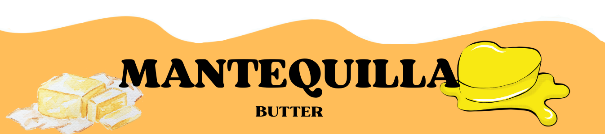
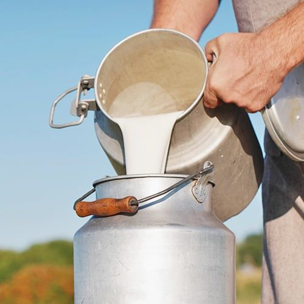

|  |
|---|
| "LA SUAVIDAD QUE SE DISFUTA" |
|---|
| La mantequilla de MAGAK es un producto elaborado a partir de crema de leche fresca, batida y purificada cuidadosamente para obtener una textura suave, un sabor auténtico y un aroma natural que realza cualquier preparación. Su consistencia cremosa y su color dorado característico reflejan la calidad de los ingredientes y el esmero puesto en cada etapa de producción. Perfecta para untar, cocinar o usar en repostería, la mantequilla de MAGAK aporta un toque gourmet a tus platillos gracias a su pureza, frescura y equilibrio de sabor. En MAGAK nos comprometemos a ofrecer un producto libre de aditivos innecesarios, manteniendo la esencia tradicional que distingue a las mejores mantequillas artesanales |
| INGREDIENTES | PROCESO |
|---|---|
MAGAK crea productos que demuestren que no se necesita de muchas cosas o de un proceso muy elaborado y difícil si no que MAGAK sabe que lo mas importante es la identidad de cada producto y esa identidad se la da el sabor, un sabor único, autentico y sobre todo natural, y esto lo aporta la frescura de la nata que es recolectada de la leche, único ingrediente base de esta mantequilla ya que en MAGAK se busca conservar la originalidad de cada producto enfocándose en un derivado lácteo artesanal pero con un toque gourmet. |
Para elaborar la mantequilla de MAGAK fue necesario dejar la leche reposando para poder extraer la nata día a día significando así un proceso de empeño y prosperidad para MAGAK para después esta nata someterla aun proceso de batido donde se bate con mucha paciencia para poder separar la nata del suero batir y batir con delicadeza para terminar con un consistencia suave, fresca y natural pero con un sabor muy rico siendo la combinación perfecta de dulce y salado, pudiendo ser utilizada al gusto por que MAGAK ofrece una mantequilla única. |
| INGREDIENTES BASE | |
|---|---|
En MAGAK lo más importante son los ingredientes esenciales de cada producto y de nuestra mantequilla es la nata ya que es la parte más grasa de la leche y se forma porque la grasa, al ser más ligera, sube naturalmente a la superficie mientras el suero queda abajo; en MAGAK esta separación se realiza de manera controlada para obtener una crema pura y de calidad. Cuando la nata se bate, las gotas de grasa se unen entre sí y expulsan el líquido restante, provocando la separación final del suero y dando como resultado la mantequilla, un producto cremoso, natural y lleno de sabor. |
 |
USOS Y BENEFICIO DE LA MANTEQUILLA DE MAGAK |
|
|---|---|
| La mantequilla de MAGAK puede utilizarse para cocinar, hornear, untar o realzar el sabor de cualquier platillo gracias a su textura suave y su sabor auténtico; es ideal para panes, salsas, repostería, salteados y preparaciones gourmet. Su proceso artesanal y natural garantiza una mantequilla más pura, sin aditivos innecesarios, con una crema de leche de mejor calidad y un sabor más fresco y auténtico; | además, al trabajarse de forma tradicional, se conserva mejor el aroma, los nutrientes y la cremosidad característica que distinguen a un producto hecho con dedicación y respeto por lo natural. MAGAK no tiene una especificación de uso MAGAK busca la satisfacción de cada cliente y se enfoca en beneficiar el paladar en cada platillo. |
| ©MAGAK.butter |
|---|